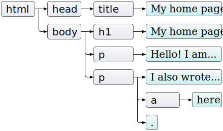

El Navegador
🌎
TCP
💻 ↔️ 📦 ↔️ 🖲 ↔️ 📦 ↔️ 🖥
W W W 🖱
HTTP
💻 ↔️ 🖲 ↔️ 🗂
URL
http://mysite.com/index.html
protocolo + dominio:puerto + path
window

location
location.href; // URL de la página
location.hostname; // Nombre del dominio
location.pathname; // Nombre del path
location.protocol; // Nombre del protocolo
navigator
navigator.userAgent; // Informacion del browser.
navigator.platform; // Nombre del S.O.
navigator.language; // Devuelve el idioma y la region del browser
navigator.product; // Nombre del motor de JS
history
history.go(10); // 10 pasos/paginas adelante
history.go(-10); // 10 pasos/paginas atras
history.back(); // Pagina anterior
history.foward(); // Pagina siguiente
alert
alert('Hello! I am an alert box!!');
prompt
const person = prompt('Please enter your name', 'Ignacio Anaya');
alert(person);
confirm
const result = confirm('Press a button!');
alert(result);
setTimeout
setTimeout(() => {
console.log('Hello);
}, 3000);
setInterval
setInterval(() => {
console.log('Hello');
}, 3000);
document
DOM 🌲
Navegar Nodos
document.parentNode
document.childNodes
document.firstChild
document.lastChild
document.previousSibling
document.nextSibling
Buscar Nodos
document.getElementsByTagName('nombreTag');
document.getElementById('idTag');
document.getElementsByClassName('claseTag');
document.querySelectorAll('selector');
document.querySelector('selector');
Crear Nodos
document.createTextNode;
document.createElement;
Cambiar Nodos
document.removeChild;
document.addChild;
document.appendChild;
Atributos
const a = document.getElementsByTagName('a')[0];
a.href = 'http://google.com';
a.getAttribute('href');
a.setAttribute('href', 'http://google.com');
style
node.style.color = 'red';
className
node.className = 'box';
Eventos
Tipos
ListaaddEventListener
const a = document.getElementsByTagName('a')[0];
a.addEventListener('click', (e) => {
console.log(e);
});
removeEventListener
const a = document.getElementsByTagName('a')[0];
a.removeEventListener('click');